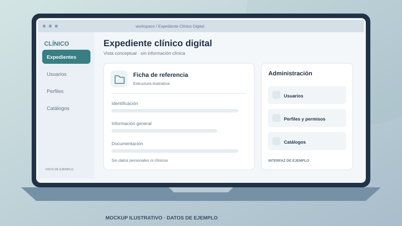

Corrección y desarrollo de algunos módulos durante la segunda fase de un sistema existente
Participación en la segunda fase de una plataforma de expediente clínico digital, mediante correcciones, desarrollo de módulos y mejoras de interfaces y validaciones.

Mockup ilustrativo · Interfaz conceptual con datos de ejemplo, no es una captura real.
Descripción del proyecto
Sistema web orientado a organizar información clínica y facilitar su consulta por parte del personal médico. El proyecto contempla la gestión de usuarios, perfiles y permisos, así como información de pacientes y catálogos de apoyo a la operación.
Me incorporé durante una segunda fase de desarrollo, trabajando junto con el equipo responsable para ampliar y corregir funcionalidades de la plataforma.
Mi participación
Participé en la corrección y el desarrollo de algunos módulos de una aplicación que ya contaba con avances previos. Mi trabajo se enfocó en modificar interfaces existentes, corregir errores e incorporar funcionalidades y validaciones dentro del alcance asignado.
No fui responsable del desarrollo completo del sistema ni de todos los módulos descritos en su documentación.
Participación realizada durante la segunda fase de desarrollo.
Aportaciones
Corrección de errores en módulos e interfaces existentes.
Desarrollo de funcionalidades dentro de módulos asignados.
Incorporación y ajuste de validaciones.
Colaboración con el equipo durante la segunda fase del proyecto.